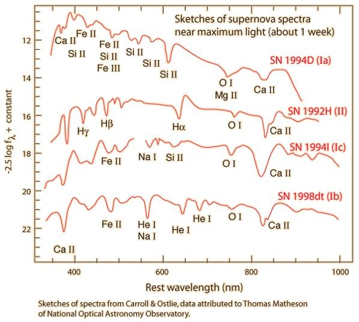

In this second part of this course we will be looking at post-main-sequence evolution. This means we will be looking at the end states of stellar evolution: white dwarfs, neutron stars, and black holes. Unlike main sequence stars we have been looking at so far, these objects are not powered by nuclear fusion. We will require some new physics to understand their behaviour and explain the observations.
7.1 Recap
We already know that stars form from collapse of gas clouds. What stops the collapse, eventually? Why doesn’t the collapse continue down indefinitely, to a point?
- Protostars release gravitational potential energy as heat (remember the KH timescale)
- Main sequence stars and ‘burning’ stars, have nuclear reactions to release heat
- This heat creates pressure in the interior that stops further collapse (hydrostatic equilibrium - see Figure 7.1, Figure 2.24).
Based on the ideal gas law \[ P = nRT/V, \]
we need a finite temperature \(T\) to create pressure. Since a star is losing heat into space, the heat energy must be continually replenished.


- In protostars, contraction continues until fusion takes over
- In burning stars, fusion of successively heavier elements takes place
- But there is a limited amount of fuel in a star (see Iron Catastrophe in Chapter 6, Figure 7.8).
When the fuel runs out, the star will resume contracting, since there is no longer a thermal pressure to balance gravity.
- So what is it that keeps White Dwarfs, Neutron Stars etc from collapsing?
- And why is it that some stars do collapse to black holes?
7.1.1 Low-mass stars (\(\sim 1 M_\odot\))
Low-mass stars fuse elements up to carbon. Thereafter, because stellar mass is low, core pressure due to self-gravity is not enough to cause sufficient temperature rise to begin fusion of heavier elements.
Outer layers are expelled to form a planetary nebula and the carbon core collapses to form a white dwarf (see Chapter 9).

7.1.2 High-mass stars (\(\gtrsim 8M_\odot\))
Stars continue fusion up to nickel and iron. Iron is the most tightly bound atomic nucleus – no more energy available from fusion.
Star also collapses, but since it is much more massive than a white-dwarf-progenitor, more gravitational energy can be released: much more violent event – a supernova.

7.1.3 Fates of stars
| ZAMS mass | Collapsing mass | Fate |
|---|---|---|
| \(\lesssim 8\,M_\odot\) | \(1.4\,M_\odot\) | White Dwarf |
| \(8 - 25 M_\odot\) | \(1.4 - 3 M_\odot\) | Neutron Star |
| \(\gtrsim 25 M_\odot\) | \(\gtrsim 3 M_\odot\) | Black Hole |
In very late stages of stellar evolution, much of the star’s initial mass (Zero Age Main Sequence Mass) is blown off as the outer layers are shed into space (radiation pressure). The mass of the collapsing core is therefore much less than the ZAMS mass.
Most of the mass blown off into the interstellar medium can then be recycled to form other stars.

7.2 Supernova classification
Supernovae are classified into different types depending on whether they show hydrogen in their spectrum, as we already anticipated in Chapter 3, when we talked about binaries.
- Type I: have almost no hydrogen.
- Type II: do show presence of hydrogen.
Type I supernovae are further classified in different categories based on the presence of other chemical elements (see Figure 7.5).

- Type Ia are believed to be the result of accreting white dwarfs in a binary system (see Chapter 3), being pushed over the mass limit and undergoing further nuclear fusion in a runaway reaction that destroys the star.
- Type Ia are found in all types of galaxies.
- Types Ib, Ic and II result from the collapse of high-mass stars straight to a neutron star or black hole.
- The lack of hydrogren in these categories indicates that the the stars involved have been stripped of their hydrogen envelopes.
- Types Ib,c are only found in spiral galaxies where there was recent star formation.
- This implies that Types Ib,c and due to massive short-lived stars.
Types Ia,b,c indicate that different mechanisms are at work.

7.3 Supernova mechanism
Need \(> 8M_\odot\) for core collapse to allow carbon and oxygen burning.
- An onion-like shell structure develops with fusion by-products (ashes), sinking down through the layers.
- The final stage is silicon burning, which generates a host of nuclei centred around the 56Fe minimum of the binding energy curve (Figure 7.8) - iron-56 is one of the most tightly bound nuclei
- Since each stage is less energy efficient, they take shorter and shorter times to complete (for a 20\(M_\odot\) star, Hydrogen burning took 107 years; Silicon burning takes ∼days).


Nuclear fuel is exhausted in the core. Radiated energy can no longer be replaced, so pressure falls. Hydrostatic equilibrium is lost, so core rapidly contracts (\(\sim 1/4\) second).
Contraction releases gravitational potential energy, causing temperature to rise to \(T\sim~ 5\times 10^{9}\)K. High temperature allows endothermic (heat absorbing) reactions.
7.3.1 Endothermic reactions
7.3.1.1 Photodisintegration
Earlier exothermic fusion reactions are reversed: photodisintegration.
High energy photons like gamma photons can be absorbed, causing the nucleus to change to another species, emitting a subatomic particle (i.e. alpha particle, proton or neutron).
\[ \begin{aligned} ^{56}_{26}\mathrm{Fe}+\gamma&\rightarrow 13\,^{4}_{2}\mathrm{He}+4\,\mathrm{n}\nonumber\\ ^{4}_{2}\mathrm{He}+\gamma&\rightarrow 2\mathrm{p}^{+}+2\,\mathrm{n}\nonumber \end{aligned} \tag{7.1}\]
7.3.1.2 Neutron capture
Neutron caputre are other endothermic reactions that take place when an atomic nucleus collides with one or more neutrons, and merging they form an heavier nucleus.
Elements heavier than iron can be created by neutron capture,e.g. \[ \begin{aligned} ^{56}_{26}\mathrm{Fe}+128\mathrm{n}&\rightarrow ^{238}_{26}\mathrm{Fe}\nonumber\\ ^{238}_{26}\mathrm{Fe}&\rightarrow ^{238}_{92}\mathrm{U}+66\mathrm{e}^{-}+66\bar{\mathrm{v}}_{\mathrm{e}}\nonumber \end{aligned} \tag{7.2}\]
Produces elements heavier than iron, e.g. copper, silver, gold, platinum, bismuth, thorium, uranium, etc.
7.3.1.3 Electron capture
Endothermic reactions absorb \(\sim 2/3\) of gravitational energy released by initial collapse \(\rightarrow\) further contraction \(\rightarrow\) further temperature rise.
Core temperature reaches \(\sim 10^{10}\)K. Hot enough for inverse beta decay (reverse of normal beta decay of radioactive nuclei). \[ \begin{aligned} \mathrm{p}^{+}+\mathrm{e}^{-}&\rightarrow \mathrm{n}+\mathrm{v}_{\mathrm{e}}\nonumber \end{aligned} \tag{7.3}\]
This process is highly endothermic. A proton and an electron (\(\mathrm{p}^{+}\) and \(\mathrm{e}^{-}\)) become one neutron and emit a neutrino. Since neutrinos are very weakly interacting, they easily escape to space.
Consequence: extreme pressure drop in core. The core separates from the outer envelope and goes into free-fall, collapsing at \(\sim 10^{5}\,\mathrm{km}\,\mathrm{s}^{-1} (\sim 1/3 c).\)
7.3.2 Collapse
- Core collapses to radius of \(\sim 20\) km. Consists of closely-packed neutrons at \(\sim 3\times\) nuclear densities (\(\sim 10^{9}\) tonnes cm\(^{-3}\)).
- At this point, core stiffens due to degeneracy pressure (see Chapter 8) and abruptly halts collapse. Degenerate core rebounds slightly, sending shock wave back up through in-falling material.
- Shock wave initiates further endothermic reactions and loses energy, but is boosted by huge flux of neutrinos emanating from core. Further in-falling material continues to strike degenerate core and rebound \(\sim\) elastically.
7.3.3 Remnant
Bouncing material and enormous neutrino flux blows outer layers of star off into space, forming a supernova remnant.
7.3.4 An example: The Crab Nebula

- The Crab Nebula is \({\sim}6500\) light years away.
- Diameter of \(\sim 11\) light years.
- Current expansion velocity \(\sim 1500\) km s\(^{-1}\), i.e. \(\sim 0.5\%\) of speed of light.
- This is the 2nd recorded observed supernova. Seen on July 4th 1054 by a court astrologer during China’s Sung dynasty.
- Initially visible during the day!
7.3.5 Why do SN remnants expand so quickly?

As the shock wave travels out through stellar envelope, carrying energy and momentum, it encounters material of ever decreasing density.

Energy and momentum is conserved. Shock wave passing into lower density region transmits momentum to a progressively lower mass of material per unit surface area of the wave.
From the definition of momentum \(p=mv,\) we know that roughly the same \(p\) and smaller \(m\) results in larger \(v\). Low-density outer layers attain huge expulsion velocity.
7.4 Energy Budget and Luminosity

Observationally, supernovae brighten rapidly to \(\sim10^{9}\,L_{\odot}\) in about 10 days, then slowly dim over about 100 days, i.e. they may briefly outshine their entire host galaxy.
Energy source is the release of gravitational potential energy by the contraction of the core.

Gravitational potential energy of a uniform sphere is roughly \[ E_G=-\frac{GM^{2}}{r}. \] So the energy released by contraction, from the core initially having radius \(r_1\) (when the contraction starts, assuming no more mass is lost) to the neutron star of radius \(r_2\), is roughly \[ \Delta E\approx\left(\frac{GM^{2}}{r_{1}}\right)-\left(\frac{GM^{2}}{r_{2}}\right). \] Since \(r_{1}\gg r_{2}\) \[ \Delta E\approx \frac{GM^{2}}{r_{2}} \tag{7.4}\]
- Using typical neutron star values of \(M=1.4M_{\odot}\) and \(r_{2}=20\)km, we find energy released \(E\approx 10^{46}\) J.
- This is equivalent to \(L_{\odot}\) emitted continuously for \(10^{20}\) seconds, or \(\sim 100\) times the Sun’s total energy production over its Main Sequence lifetime, but in only \(\sim 1/4\) second!
Where does all this energy go?
About \(2/3\) of released energy is reabsorbed in endothermic reactions.
Most of remaining \(1/3\) is released as neutrinos - about \(10^{57}\) of them.
About \(1\%\) goes into kinetic energy of the ejecta.
About \(1\%\) goes into photons, with about \(0.01\%\) as a visible flash.
Supernovae produce cosmic rays (extremely high energy particles, mostly protons but also some electrons and heavier nuclei).
Supernovae distribute heavier elements into space, which are then incorporated into new stars and planets. Some of the material in the human body was “cooked” in supernovae.
7.4.1 Supernovae and the interstellar medium
- The supernova shock wave can disrupt interstellar gas clouds, perturbing their equilibrium and causing collapse and fragmentation – new stars form, thus completing the cycle of stellar life.
- With roughly 2 supernovae per galaxy per 100 years, and about \(10^{11}\) galaxies in the universe, there are on average about 50 supernovae per second!